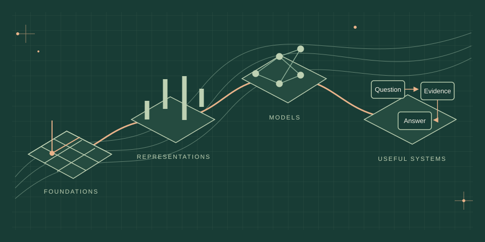

An intuition-first field guide
From first principles to models.
From models to useful systems.

Learn to explain what a model does,
then build with intention.
The first part of a wider journey
Becoming an AI engineer involves more than mathematics: useful systems also need sound design, evaluation, and operational care. This edition develops the mathematical and model foundations first. Later systems topics are a direction for the book, not chapters already written.
How to use Part I: intuition, calculations, and explained practice →